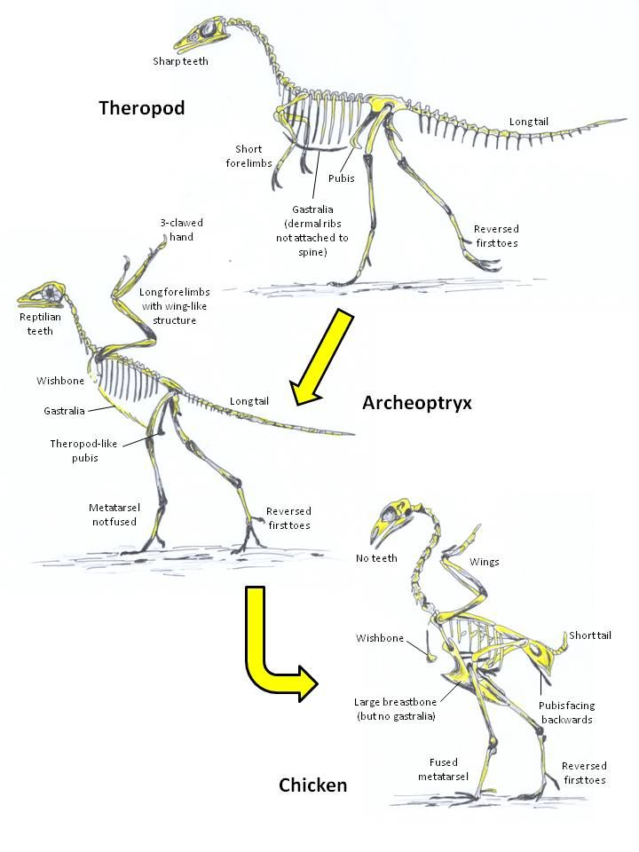

Que história é essa?
Quando pensamos em dinossauros, imaginamos monstros gigantes e aterrorizantes.
Mas o que poucos sabem é que os dinossauros nunca desapareceram completamente. Eles evoluíram.
Hoje, as aves são consideradas os dinossauros modernos.
Pesquisas mostram que animais como pombos, galinhas e avestruzes compartilham traços anatômicos diretos com os antigos dinossauros — principalmente com os chamados terópodes, o mesmo grupo que inclui o famoso Tyrannosaurus rex e o ágil Velociraptor.
Vestígios como ossos ocos, penas primitivas, formato das patas e até o jeito de se mover conectam as aves aos seus ancestrais gigantes.
Então, da próxima vez que você vir um pombo andando com aquele olhar desafiador...
Lembre-se: você está encarando um descendente direto dos reis pré-históricos.
A imagem ao lado demonstra, de maneira simples, a evolução dos dinossauros terópodes até as galinhas, tendo como intermédio o Archaeopteryx, o considerado primeiro dinossauro que dominou os céus.
